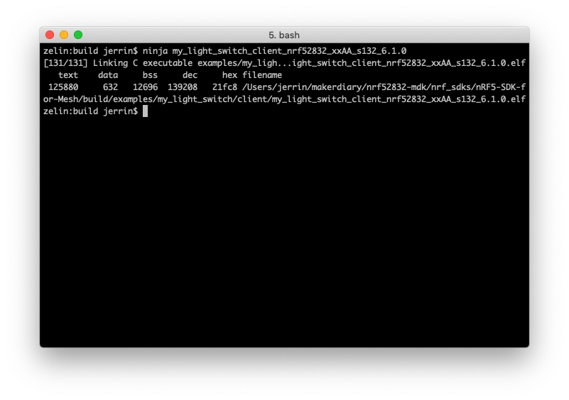

nRF5 SDK for Mesh
Software Development Kit for Bluetooth mesh solutions using nRF51 Series and nRF52 Series¶

Introduction¶
The nRF5 SDK for Mesh is Nordic Semiconductor's implementation of the Bluetooth Mesh. It allows applications to utilize the features provided by the Bluetooth Mesh when running on Nordic's nRF5 Series chips.
The addition of mesh networking capabilities to Bluetooth Low Energy enables extended range, increases the number of nodes and a many-to-many (m:m) communication topology. In a Bluetooth mesh network every received packet is broadcasted by relays, until the packet is received by the destination node (a so called managed flooding mesh.) A simple, but effective way of spreading information across the mesh network with no single point of failure. The mesh functionality is a significant update and enables new applications for Bluetooth in smart home, lighting, beaconing and asset tracking applications.
You can find detailed information about Bluetooth Mesh in Bluetooth SIG's introduction to Bluetooth Mesh and the Bluetooth Mesh Networking Specifications.

For more about nRF5 SDK for Mesh, please go to nordicsemi.com.
The following documentation sections provide detailed information about the required software toolchains and the process of building the mesh examples.
Installing the toolchain¶
To build the example applications, a toolchain based on CMake is required. Install instructions are provided for macOS, Windows and Linux.
macOS¶
-
Install CMake and Ninja using
brew:brew install cmake ninja
-
Download and install the GNU ARM Embedded Toolchain. The
6-2017-q2-updateversion is recommended. Then make sure to add the path to your toolchain to your OS PATH environment variable.# in ~/.bash_profile, add the following script export PATH="<path to install directory>/gcc-arm-none-eabi-6-2017-q2-update/bin:${PATH}"
-
Verify if the path is set correctly, type the following in your terminal:
arm-none-eabi-gcc --version
-
Install nRF5x Command Line Tools and pyOCD.
Windows¶
The easiest way to install the native Windows dependencies is to first install Chocolatey, a package manager for Windows. If you prefer to install dependencies manually, you can also download the required programs from their respective websites.
-
Install Chocolatey by following the instructions on the Chocolatey install page.
-
Open a command prompt (
cmd.exe) as an Administrator -
Optionally disable global confirmation to avoid having to confirm installation of individual programs:
choco feature enable -n allowGlobalConfirmation -
Install CMake:
choco install cmake --installargs 'ADD_CMAKE_TO_PATH=System' -
Install the rest of the tools, and close the Administrator command prompt window when finished.
choco install git python ninja
-
Download and install the GNU ARM Embedded Toolchain. The
6-2017-q2-updateversion is recommended. Then make sure to add the path to your toolchain to your OS PATH environment variable. -
Install nRF5x Command Line Tools and pyOCD.
Linux¶
This section describes how to set up the development environment on Ubuntu. The steps should be similar for other Linux distributions.
-
Ensure your host system is up to date before proceeding.
sudo apt-get update sudo apt-get upgrade
-
Install the following packages using your system’s package manager.
sudo apt-get install --no-install-recommends git cmake ninja-build python3-pip
-
Download and install the GNU ARM Embedded Toolchain. The
6-2017-q2-updateversion is recommended. Then make sure to add the path to your toolchain to your OS PATH environment variable. -
Install nRF5x Command Line Tools and pyOCD.
Clone the Repository¶
To clone the source code repository from GitHub:
git clone ---recursive https://github.com/makerdiary/nrf52832-mdk.git
Or if you have already cloned the project, you may update the submodule:
git submodule update --init
The nRF5 SDK for Mesh now requires the nRF5 SDK to compile. Follow this instruction: Installing the nRF5 SDK.
Building the mesh stack and examples¶
Now you can try to build the mesh stack and examples. Good practice is to create a build folder in the nrf_sdks/nRF5-SDK-for-Mesh directory, where all artifacts generated by the Ninja build system are stored:
nRF5-SDK-for-Mesh$ mkdir build && cd build
Before you can build with Ninja, you must generate the correct build files with CMake.
cmake -G Ninja -DTOOLCHAIN=gccarmemb -DPLATFORM=nrf52832_xxAA -DBOARD=nrf52832_mdk -DFLASHER=pyocd ..

After the Ninja build files are generated, running ninja <target> to build the targets. Here we take my_light_switch_client as an example:
ninja my_light_switch_client_nrf52832_xxAA_s132_6.1.0

Running the example¶
To run examples onto your nRF52832-MDK, first connect it to your computer with a USB cable. When your board is detected, run ninja flash_<your target> to flash the example:
ninja flash_my_light_switch_client_nrf52832_xxAA_s132_6.1.0

Run a terminal application(for example PuTTY or screen) to print the log information:
screen /dev/cu.usbmodem1412 115200

Flash other several nRF52832-MDK boards with Server target:
ninja flash_my_light_switch_server_nrf52832_xxAA_s132_6.1.0
To build a Bluetooth Mesh Network, you can use the nRF Mesh mobile app(iOS or Android).

Creating a new target¶
The easiest way to make a new build target is to:
-
Copy one of the example folders, e.g.,
examples/my_beaconingtoexamples/my_app. -
Add the folder to the
examples/CMakeLists.txtwith aadd_subdirectory("my_app")command. -
Modify the target name in the first line of
examples/my_app/CMakeLists.txttoset(target "my_app"). -
Generating build files with
nRF5-SDK-for-Mesh $ mkdir build && cd build build $ cmake -G Ninja -DTOOLCHAIN=gccarmemb -DPLATFORM=nrf52832_xxAA -DBOARD=nrf52832_mdk -DFLASHER=pyocd ..
-
Build your new target with:
ninja my_app
-
Flash the target:
ninja flash_my_app
More examples¶
Over time, more example applications will be added to the repository. You can star or watch the nrf52832-mdk repository to stay up to date.
Reference¶
- nRF5 SDK for Mesh Documentation
- nRF5-SDK-for-Mesh Repository
- Basic Bluetooth Mesh concepts
- nRF5 SDK for Mesh architecture
Create an Issue¶
Interested in contributing to this project? Want to report a bug? Feel free and click here: